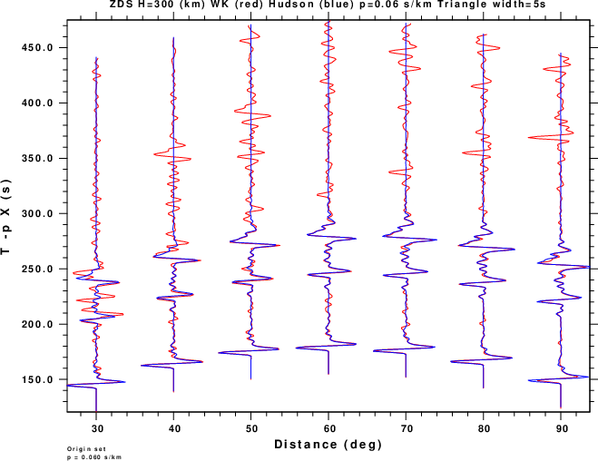

This is a presentation of record sections of the vertical component Green's functions at a function of source depth. The traces are plotted in the [-20, 200] sec window about the P-wave first arrival τ - T - p X(km), where X=0.06 s/km. The red trace is the complete synthetic computed using wavenumber (WK) integration and Earth flattening for the AK135F model while the blue is the Hudson synthetic. Each trace is scaled according to its peak amplitude. Thus if the peak amplitude occurs later on the WK trace, then there will be an apparent difference in the appearance of the the overlain traces. Finally this is not a true amplitude record section.
The purpose of this display is to determine the range of depths and distances for which the Hudson technique can be an acceptable approximation to the complete WK synthetics.
The source is a parabolic pulse with a duration of 4s. The sample interval is 1.0s. In addition these have been convolved with a unit area triangle of length 5s.
The figures are oriented horizontally by the Green's function and vertically by source depth. The title at the top of each figure gives the Green's function and source depth.
|  | ||